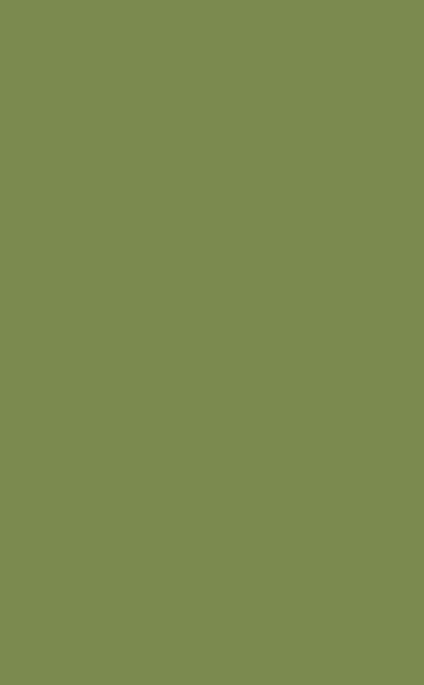

2 opciones · 832×1344 (Fibonacci 13:21) · seed 7777 · prompt debajo de cada imagen.

Disco Elysium / Arcanum · pinceladas · claroscuro a la luz de vela.
score_9, score_8_up, score_7_up, rating_safe, solo, one person, (oil painting portrait:1.3), 2000s CRPG character portrait, Disco Elysium and Arcanum style, painterly visible brushstrokes, muted earthy palette, dramatic chiaroscuro candlelight, grim painted realism, textured canvas, a weathered 45 year old man, veteran sergeant of the Confederacion Argentina theocratic army, broad shoulders, square jaw, short grey stubble, a scar through one eyebrow, solemn weary eyes, olive drab green high-collar military uniform with celeste blue trim, a small brass crucifix at the throat, grim dystopian military theocracy, solemn dignified bust portrait
Estampa intaglio · cruz-rayado fino · santoral / billete antiguo · austero.
score_9, score_8_up, score_7_up, rating_safe, solo, one person, (copper engraving:1.3), old master etching, intaglio print, fine cross hatching line work, austere monochrome, holy card engraving, antique stipple portrait, solemn and reverent, a weathered 45 year old man, veteran sergeant of the Confederacion Argentina theocratic army, broad shoulders, square jaw, short grey stubble, a scar through one eyebrow, solemn weary eyes, olive drab green high-collar military uniform with celeste blue trim, a small brass crucifix at the throat, grim dystopian military theocracy, solemn dignified bust portrait